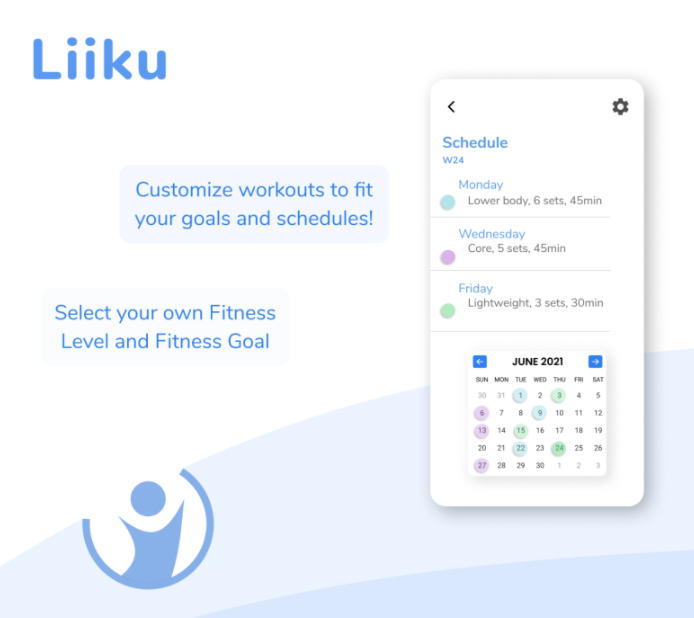

Liiku
A Fitness Application Prototype Made Using Figma.
Liiku was a joint effort with a fellow student, where we built a fully functional prototype using Figma.
Aesthetics, Use Experience design and functionality were made by me.
